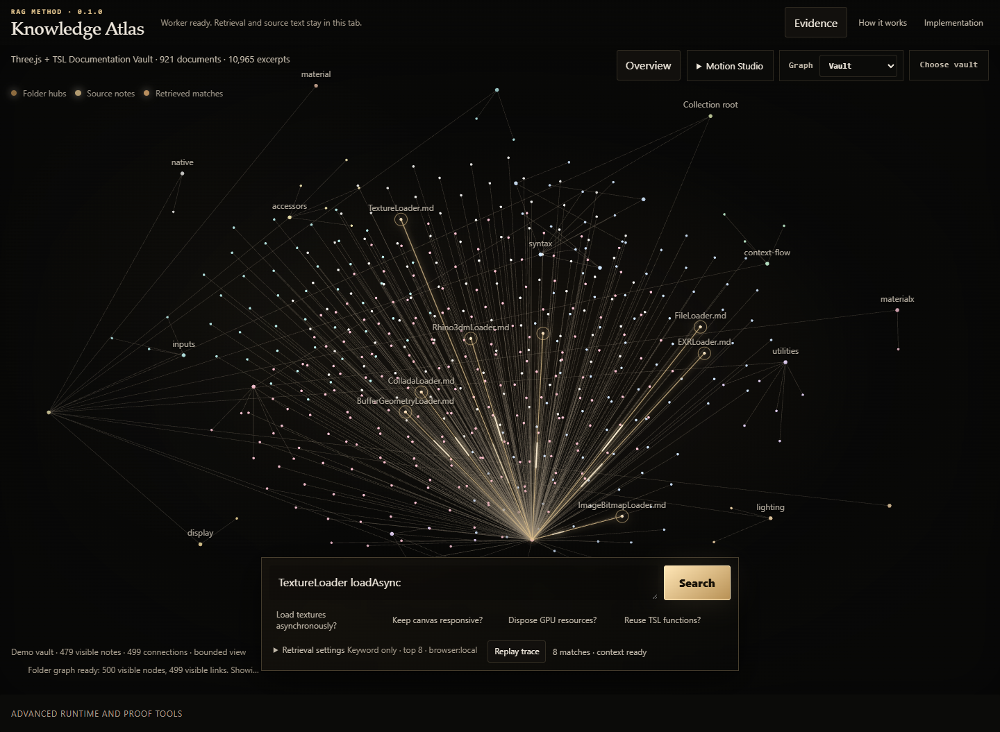

How it works
From a question to source-backed context
Open the example vault for a guided first trace, or choose your own Obsidian Markdown and text files. Personal vaults never run an automatic query. Files are read locally, indexed in a Worker, and searched without a backend or model call.
The graph shows actual source, chunk, and reference relationships. Animation presents the completed retrieval; it is not a measurement of search time. Skip or replay it at any time. Result cards are previews; Complete context exposes the complete ordered context packet and its estimated token count.
Local imports support up to 1,200 documents and 6 MiB of source text. Hidden settings and application-state folders are excluded. Nothing is saved between sessions. Read the implementation and frozen retrieval contracts.
Sources and licenses
Sources and attribution
The example contains 921 Three.js API, TSL, and manual documents derived from Three.js at the pinned source revision, under its MIT license. Source-reader links open that pinned revision, not mutable latest documentation.
RAG Method and the TSL graph renderer are MIT licensed. The example is an offline documentation snapshot, not a guarantee that its API descriptions apply to another Three.js version.
Method and implementation
Method and implementation
RAG Method separates a language-neutral retrieval method from its reference implementations and applications. The frozen rag-indexing-v1 and rag-behavior-v2 profiles define indexing, scope rules, ranking, and context assembly. Shared fixtures let the Python reference and browser Worker compare the same observable results.
This explorer runs indexing and retrieval in a dedicated Worker. modules/browser-rag-ts/src/core implements the method, src/worker owns local execution, and src/application presents the evidence and graph. The example uses keyword and exact retrieval; semantic controls use deterministic test vectors rather than an embedding service. No model is called.
The MIT source release also includes the Python reference, conformance fixtures, and the backend-based RAG Method Lab. The separate @ours/forcegraph-tsl package supplies reusable graph layout and rendering. Its math and scene ownership do not depend on RAG scoring or retrieval policy.